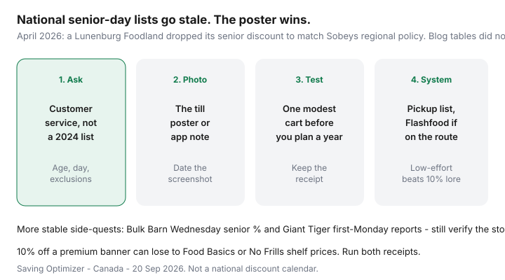

Food & Groceries · Canada
Senior grocery savings in Canada: verify local discounts and build a low-effort system
Search “senior grocery discount Canada” and you will get confident tables: Sobeys 15% Tuesdays, FreshCo 10% Ontario-wide, Metro every Wednesday. Some of those lines were never chain policy. Others died when a store “aligned with the region.” In April 2026 a Lunenburg Foodland ended its long-running senior discount; Sobeys told The Chronicle Herald that regional Foodland and Sobeys stores do not offer individual store-level discount programs.
Fixed-income households need tactics that survive a policy change: verify locally, then run a low-effort system — lists, pickup, surplus on the same trip, simple loyalty, proteins that fit one or two people. This is not a national coupon calendar. It is a way to stop planning the month around a blog.
Disclosure: Grocery delivery passes and cards are offer types if they genuinely replace a trip you cannot make. Saving Optimizer may earn a commission if we later add those links. We do not currently claim grocer partnerships. No discount in this article is promised at your store.
Key takeaways
- National senior-day lists go stale. The customer-service desk and the till poster are the source.
- 10% off a premium banner can still lose to No Frills or Food Basics shelf prices. Compare one receipt.
- Pickup, a short produce walk, and Flashfood on the same visit beat a full-store marathon.
- One loyalty app, loaded weekly, is enough. You do not need a points hobby.
- Skip warehouse bulk unless you can portion and freeze. Overbuying is a silent rent increase.
Why national “senior discount day” lists go stale
Independent grocers and franchise stores invent local perks. Head office later standardizes. Bloggers copy each other. By the time a “2026 senior discounts” list ranks on Google, a store may have dropped the day — Lunenburg is the documented 2026 example, not a vibe.
Lists still useful as questions to ask, not as facts: Giant Tiger first-Monday senior % (often reported at 60+), Bulk Barn Wednesday senior % (often 65+), M&M Food Market Tuesday reports, Shoppers Drug Mart Thursday pharmacy senior % (that is not a grocery cart). Empire banners (Sobeys, Safeway, IGA, Foodland) are local. Loblaw discounters rarely advertise a national senior till percent — they sell the shelf and PC Optimum.

How to verify your local store’s policy
- Ask customer service: “Do you have a senior discount? What age, what day, what is excluded?” Write the answer with the date.
- Photograph the poster or the note in the store app. If there is no poster, there may be no discount.
- Run one modest cart. Keep the receipt. Confirm alcohol, gift cards, and already-reduced items were excluded as promised.
- Ask whether Scene+, PC Optimum, or Moi still apply after the percent off.
- Recheck at New Year and if ownership signage changes.
Polite script: “I’m comparing stores for my weekly shop — is there a senior day here, and is it still running this month?” You are not arguing with a cashier using a Facebook screenshot.
Low-mobility strategies: pickup, Flashfood, lists
A full-store wander is optional. Pickup handles oats, milk, and paper. Walk only the produce and meat you are picky about. If the store is a Loblaw banner with a Flashfood Zone, add surplus protein on that same visit — freeze the same day.
Delivery passes (PC Express, Voilà) are a fee audit, not a virtue test. If a $99.99 year pass replaces a taxi or a week of pain, run the numbers in PC Express vs Voilà vs Instacart. Instacart markups plus tips are the expensive last resort.
The list is the mobility aid: write it large, shop once, refuse end-caps. A second trip “for the thing we forgot” is how fixed incomes leak.
Loyalty apps simplified for less phone friction
| If you shop | Open this | Weekly job |
|---|---|---|
| No Frills / Superstore / other Loblaw | PC Optimum | Load offers Sunday. Scan the card. Ignore multiplier games. |
| FreshCo / Sobeys / Safeway / Voilà | Scene+ | Load MyGroceryOffers. Redeem 1,000 = $10 when it changes this week’s bill. |
| Metro / Food Basics | Moi | Food Basics is often offers-only. Metro may stack more. See the Moi guide. |
A family member can load offers on speakerphone. Printed offer screenshots in a pocket still work at many tills. Details in PC vs Scene+ vs Moi if you want the long version — you do not need it to save.
Nutritious budget proteins for smaller households
Eggs, dry lentils, large plain yogurt tubs you can finish, canned fish, tofu, and sale chicken pieces beat a Costco tenderloin for one. Health Canada’s healthy-eating-on-a-budget pages still push legumes, eggs, and frozen veg — unglamorous and correct. Cost-per-gram math is in cheap high-protein meals.
Cook once, eat twice. Freeze the second portion the night you cook. A $300-style single-person cart scaled to appetite lives in the $300/month playbook.
Avoiding overbuying on bulk deals
Warehouse clubs and “family packs” assume a family. If the extra kilograms will not be portioned tonight, the unit price is a lie. Share a Costco run only with someone who pays you at the car. Otherwise buy the smaller discounter pack.
Verify any senior % you do have, then still shop the shelf. A 10% discount on a $90 convenience cart is $9. The same dinners at a discounter might have been $68. Systems beat folklore.
Sources & date stamps
- The Chronicle Herald / Saltwire, 24 Apr 2026: Lunenburg Foodland ends senior discount; Sobeys statement on no individual store-level discount programs at regional Foodland and Sobeys stores.
- Health Canada, healthy eating on a budget / meal planning pages — protein and produce patterns, not prices.
- Community and directory lists of senior days (Giant Tiger, Bulk Barn, M&M) — treat as prompts to verify, not as policy.
- Our Flashfood, pickup, and loyalty guides for the low-effort stack.
Frequently asked questions
Do Canadian grocery stores still have senior discount days?
Some locations do; many never did, and some have dropped them. Sobeys told reporters in April 2026 that regional Foodland and Sobeys stores do not offer individual store-level discount programs after a Lunenburg Foodland ended its senior discount. Treat national blog tables as stale until the store poster agrees.
How do I verify my local senior grocery discount?
Ask customer service, photograph the current poster or app note, and test one modest cart. Write down age cutoff, day, exclusions (alcohol, gift cards, already-reduced items), and whether loyalty still applies. Recheck twice a year.
What if I cannot walk the whole store every week?
Use pickup or a short hybrid: click staples, walk only produce and meat, add Flashfood if the zone is on the same visit. A trusted shopper or delivery pass is a fee you can audit — not a moral failure.
Which loyalty app is simplest for seniors?
The one that matches the store you already use. PC Optimum at Loblaw banners, Scene+ at Empire, Moi at Metro/Food Basics. Load offers once a week with a grandchild or a printed checklist. You do not need all three.
Should seniors buy warehouse club meat in bulk?
Only with freezer space, a way to portion, and a household that will eat it. A Costco roast for one person is a waste machine. Smaller discounter packs or Flashfood trays you freeze the same day are usually kinder to a fixed income.